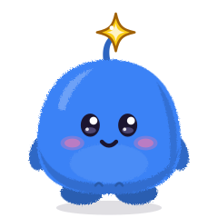
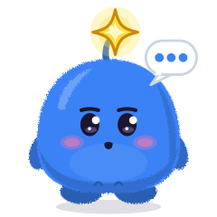

Proposta histórica: a opção B foi escolhida e a versão aprovada, com a identidade final, está em telas/01-inicio-e-conversa-do-bot.html.
Navegação no celular
Hoje o app sempre abre no último bot. Para ir ao Chat geral são três toques: menu, ícone do chat, conversa. As duas propostas deixam o chat a zero ou um toque, sem afastar os bots. Os números rosa marcam a ordem dos toques.
Hoje
Abre no último bot. A navegação inteira fica escondida no menu.
Chat geral: 3 toquesOutro bot: 2 toquesAprovações: 2 toques
Bots
Resume meus e-mails de hoje

Três e-mails pedem resposta: o contrato, a reunião de sexta e a fatura.
Chat geral +
Viagem para Floripa
Ideias de post
Dúvida de imposto
A · Barra inferior
Quatro abas sempre visíveis, no padrão do Android. O app reabre na última aba usada; Configurações vai para o cabeçalho.
Chat geral: 1 toqueOutro bot: 2 toquesAprovações: 1 toque
Chat geral
Qual a melhor época para ir a Floripa?

Trabalhando…
Mensagem para o Aion
B · Início com a Faíscaescolhida
A barra inferior da A com uma aba Início: o composer já abre pronto para falar com o Aion, e os bots aparecem com o estado ao vivo logo abaixo.
Chat geral: 0 toque (já pode digitar)Qualquer bot: 1 toqueAprovações: 1 toque
Boa tarde, Marco
2 bots trabalhando · 1 aprovaçãoFinanceiro quer enviar um e-mail para a contabilidade
Seus bots
Resumo das manhãs
Lendo a caixa de entrada…

Financeiro
Preparei o e-mail da contabilidade

Conteúdo
Rotina das 9h concluída
Chats recentes
Viagem para Floripa
ontem
Pergunte ao Aion
Por que a B
- A pergunta rápida ao Aion vira o caminho mais curto: abre e digita.
- Os bots ficam a um toque, já com o estado da Faísca (trabalhando, aguardando), sem precisar abrir cada um.
- A Faísca na cor da marca recebe o dono: é a tela onde a identidade nova mais aparece.
- Enviar no composer do Início cria uma sessão do Chat geral e abre a conversa; nada é criado só por abrir o app.
Vale para as duas
- Atalhos do ícone do PWA (pressionar e segurar no Android): "Novo chat" e "Aprovações", via
shortcutsno manifesto. - Desktop não muda: barra de ícones e painel continuam.
- Barra inferior com 64 px mais a safe area e alvos de 48 px; o teclado aberto esconde a barra.
- O selo de aprovações pendentes migra do ícone da barra lateral para a aba.
O que fica para decidir
- Bots deixam de ser aba própria na B (estão no Início). A lista completa e "Novo bot" ficam no Início e em Configurações?
- O app abre sempre no Início ou na última aba usada? A recomendação é Início, com o rascunho do composer preservado.